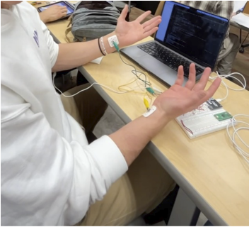
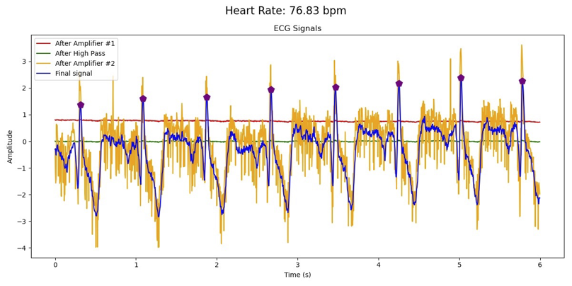
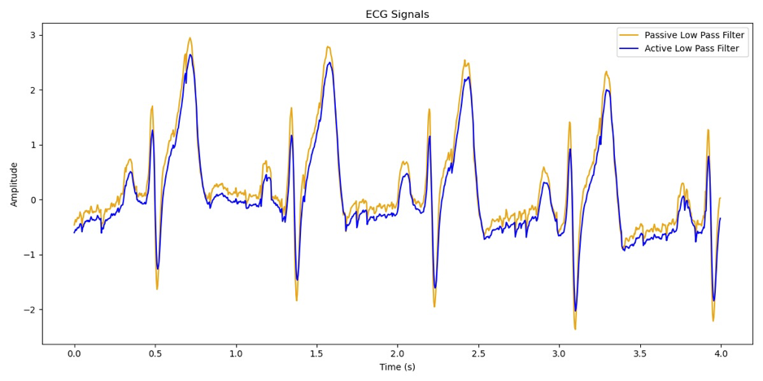
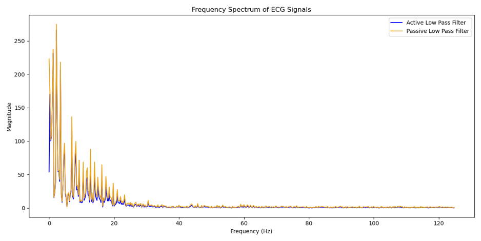
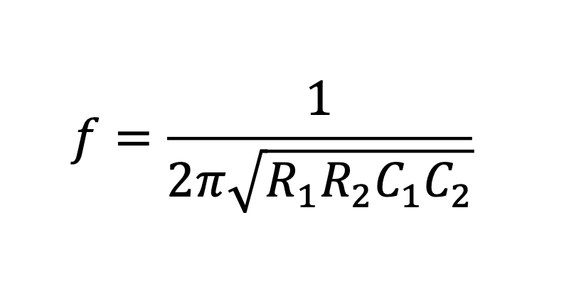
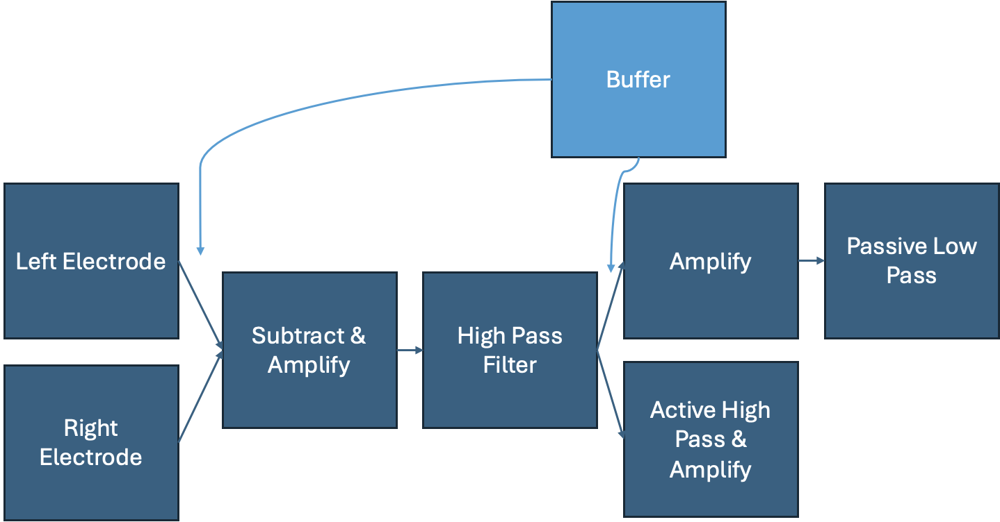
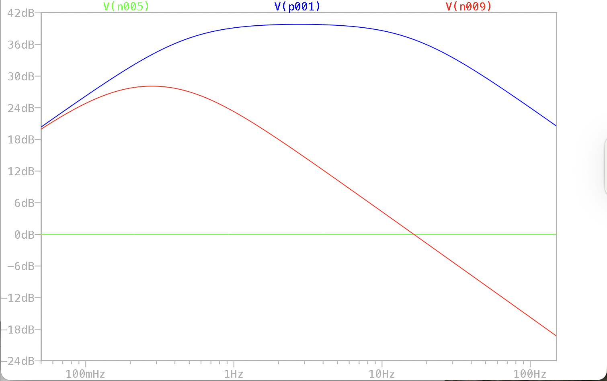
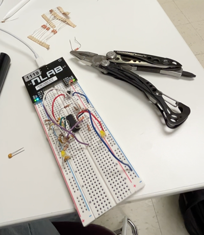
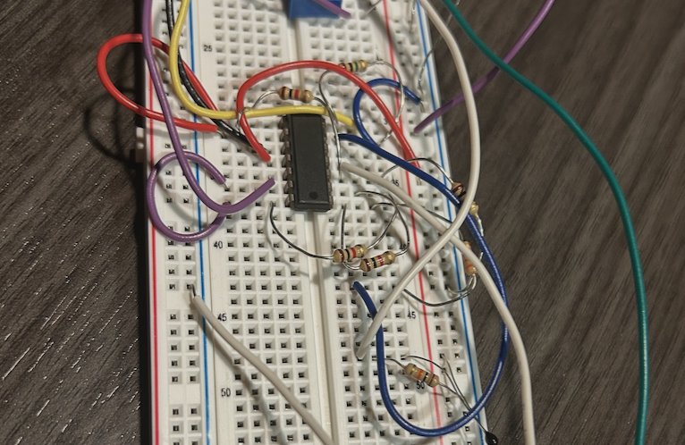

Monitoring Heart Health with Low-Cost Electronics
Electrocardiography (ECG) is an established diagnostic tool used to assess the health of a patient’s heart. However, to measure the conductive and contractile patterns of the heart non-invasively requires the collection and processing of tiny, millivolt-level voltage differences across discrete skin locations. These electrical signals are easily overwhelmed by artifacts related to electrode placement and quality, noise, and drift.
In my junior-year BME 308: Biomedical Signals and Circuits class, I was charged with building a fully-functional 3-lead ECG collection system from scratch, using low-cost raw components, including resistors, capacitors, op-amps, and a $5 instrumentation op-amp.

Live usage of the 3-lead ECG system
What it Meant to Build the Monitor from Scratch
- Design and build an amplification system to bring voltage differences up to interpretable magnitude
- Design and build two band pass filter topologies to optimize performance
- Account for real variability in patient heart rate
- Troubleshoot both hardware and software issues
- Develop the capacity to rapidly fabricate future ECG-measuring device prototypes
Results

Annotated ECG traces with dual bandpass filters for signal quality comparison

Direct ECG filter comparison

Fast Fourier Transform (FFT) of ECG bandpass filter comparison
Read more about the dual-bandpass 3-lead ECG in my lab report.
The Process
1. Gain & Cutoff Frequency Calculation
I began with known clinically expected values for ECG signal magnitude
at the skin (~1 mV) and resting heart rate (~60 bpm -> 1 Hz). I then chose
filter cutoff frequencies that would allow important ECG signal morphology
(namely, the QRS complex) to pass through while attenuating noise and drift.
I also had to choose values that were possible to build with the limited
set of resistors and capacitors available.

2. System Design (Block Diagram)
To ease communication and debugging later in the project, I drafted a block diagram representing the system's stepwise manipulation of the signal into a usable form.

3. LTSpice Circuit Design
Next, to validate my filter designs, I designed the ciruit I was planning to build in LTSpice. This allowed me to simulate the frequency response of the system and iterate on my resistor and capacitor selections without the time and component wear of building and testing multiple physical prototypes.
4. Frequency Response Simulation
I collected and interpreted the Bode plot of the designed circuit to verify that the frequency components within the passband weren't over-attenuated.

5. Manual Circuit Assembly
Next, I assembled the circuit on a breadboard and connected it to a miniature oscilloscope for signal inspection and data collection.

(Not actually the ECG circuit, but similar)
6. Unity Gain Buffer Troubleshooting
Naturally, I ran into a several bugs and mistakes made during the design and assembly process. By measuring the output at several test points in the circuit, I identified and resolved an issue in the wiring of the unity gain buffer stage.

8. Raw Signal Plotting
I then collected and plotted several samples of raw ECG data using the circuit to gauge the functionality of my filters and determine qualitative differences in their performance.
9. Peak-Picking for Heart Rate Monitoring
Using the signal Python library, I implemented a peak-picking algorithm to identify the R-peaks in the ECG signal and calculate the heart rate of the sample from the meantime between peaks.
10. FFT for Filter Comparison
Finally, I compared the data collected at the outputs of both filter toplogies using a Fast Fourier Transform (FFT) to visualize the frequency components of the signal and determine which filter performed for the intended application.